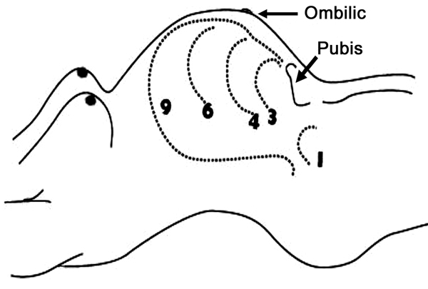
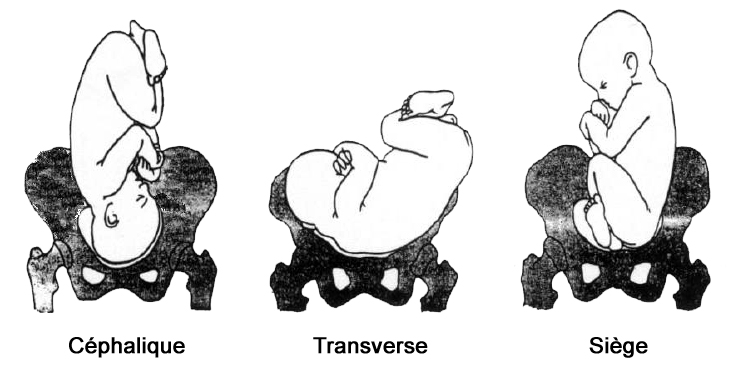
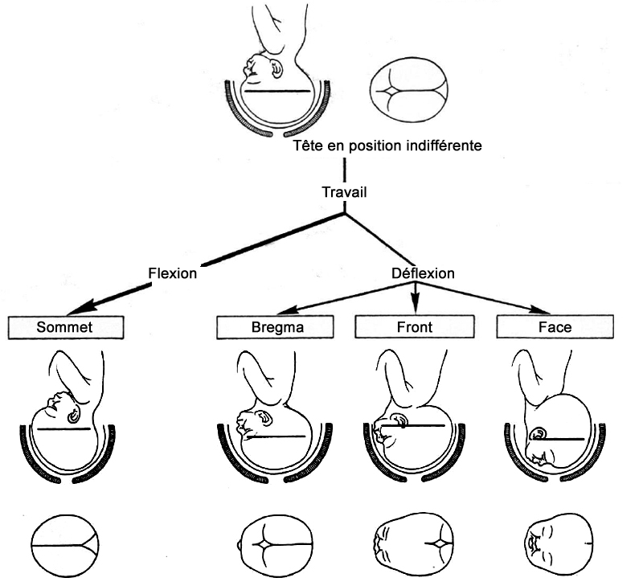
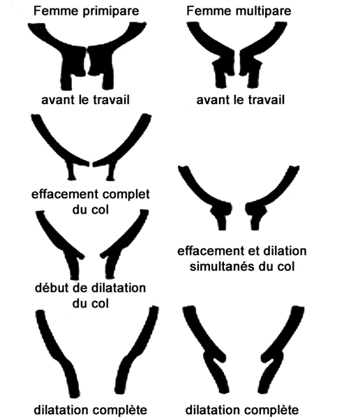
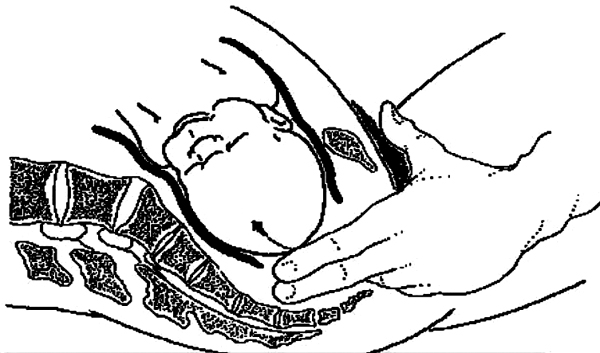
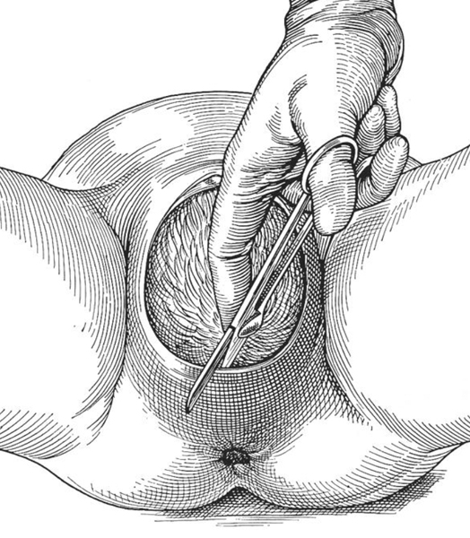

Bienvenue Sur Medical Education
Accouchement inopiné extrahospitalier
AdulteSpécialité : gynécologie /
Points importants
- L’AIE est une situation à risques mais pas une pathologie.
- La formation pratique, l’anticipation, l’installation et l’organisation doivent permettre une prise en charge adaptée.
- La décision de réaliser un accouchement extrahospitalier dépend de critères médicaux et logistiques.
- Le renfort d’une équipe compétente en obstétrique ou en néonatalogie doit être envisagé suffisamment tôt.
- Un accouchement rapide est habituellement eutocique.
- Tous les gestes doivent être doux et, quelles que soient les circonstances, il ne faut jamais tirer sur l’enfant pour espérer en favoriser l’extraction.
Indications
- En fonction de l’évaluation de la situation clinique et géographique (cf. scores de Malinas et SPIA)
Présentation du matériel
Liste indicative du matériel spécifique pour un AIE (matériel standard et néonatal exclus)
- Calot, masque à visière, sarrau
- Champs absorbants et sacs plastiques (protection de la literie et du mobilier)
- Champ d’accouchement avec poche de recueil (double poche si possible)
- Doigtiers ou gants d’examen stériles
- Gants à manchettes longues
- Compresses
- Serviettes de protection (après la délivrance)
- Antiseptique
- 1 sonde urinaire (sondage évacuateur)
- 2 pinces de Kocher à griffes
- 1 paire de ciseaux à bouts ronds pour l’épisiotomie
- 2 clamps de Barr
- 1 paire de ciseaux à bouts ronds pour la section du cordon
- 1 sac pour récupérer le placenta
- 3 ampoules de 5U d’oxytocine (Syntocinon®)
- Matériel pour inhalation de MEOPA (facultatif)
Description de la technique
EVALUER LA SITUATION
- Paramètres maternels généraux : PA, FC, FR, SpO2, T°
-
Situation obstétricale :
- parité
-
terme
-  fichier_932 Accouchement : terme de la grossesse
- déroulement de la grossesse (pathologie, traitement)
-
présentation
-  fichier_931 Accouchement : différentes présentations
-  fichier_933 Accouchement : présentation céphalique
- contractions (début, fréquence, durée)
-
dilatation
-  fichier_934 Accouchement : dilatation
-
engagement (franchissement du détroit supérieur par le plus grand diamètre de la présentation [diamètre bi-pariétal en présentation céphalique])
-  fichier_935 Accouchement : engagement
- poche des eaux (intacte, fissurée, rompue)
-
arguments d'entrée en travail :
- contractions utérines douloureuses, régulières, récurrentes, fréquentes (toutes les 5-10 min), rapidement évolutives
- avec modifications cervicales
-
Vitalité fœtale :
- FC, échographie
-
Décider de l’accouchement sur place (ou non) en fonction des critères d’imminence d’un accouchement (présentation engagée ou visible, envie de pousser, scores de Malinas et SPIA) et du délai d’acheminement vers une maternité, ne pas envisager de faire l’accouchement pendant le transport :
-
urgence relative (transport) :
-
pas d’envie de pousser
-
présentation haute, non engagée dans le vagin
-
relief cervical bien perçu et dilatation < 7 cm
-
-
accouchement imminent (accouchement sur place) :
-
envie de pousser
-
envie d'aller à la selle
-
présentation engagée, dans le vagin ou sur le périnée
-
présentation non engagée mais dilatation complète ou avancée (>7cm), surtout si multipare
-
-
urgence relative (transport) :
- Si le transport est néanmoins décidé avant l’accouchement et si le risque d’accouchement pendant le transport n’est pas négligeable, installer la patiente dans la cellule sanitaire les pieds en avant et la tête vers les portes arrière afin de pouvoir l'examiner et si nécessaire travailler dans une cellule fermée (température, intimité…).
S'INSTALLER EN ANTICIPANT
- Classiquement, installer la femme enceinte les fesses dans le vide, les ischions au bord du lit, le bassin surélevé (alignement des axes de poussée utérine et d’engagement), les pieds en dehors du lit appuyés sur deux chaises lors des phases de repos mais ramenés contre les cuisses hyperfléchies contre l’abdomen lors des phases de poussée
- Ne pas s’installer au sol car l’enfant doit sortir en descendant et être maintenu par l’opérateur dont les avant-bras doivent être plus bas que le périnée
- Protéger le sol et le mobilier
- Créer une situation calme et isolée
-
Mettre en condition la parturiente :
- abord vasculaire et prélèvements pour groupage et recherche d’anticorps irréguliers
- PA, FC
- SpO2, oxygène prêt
- nettoyage du périnée (pas de rasage)
- vessie vidée (miction ou sondage évacuateur)
-
Préparer l’accueil du nouveau-né :
- pièce réchauffée sans courant d’air
- faire chauffer des serviettes ou draps propres qui permettront d’accueillir le nouveau-né
- installer une table à proximité recouverte de serviettes et avec le matériel destiné aux soins du nouveau-né (examen et éventuelle réanimation)
- Installer le champ d’accouchement pour travailler en zone propre, recueillir le liquide amniotique, l’urine, les compresses etc. puis quantifier les pertes sanguines
ACCOUCHER EN FAISANT FAIRE LES BONNES ACTIONS
Présentation céphalique
- Ne jamais tirer, quelles que soient les circonstances
- Ne commencer à faire pousser que lorsque la dilatation est complète, la présentation engagée et la poche des eaux rompue (spontanément ou avec une branche de pince de Kocher ou un perce-membranes)
-
Dégagement de la tête :
- ne faire pousser que pendant les contractions, à glotte fermée, le cou fléchi en avant, les talons contre les fesses
- la main gauche (supérieure) de l’accoucheur contrôle la sortie de la tête (interrompre les efforts expulsifs lorsque la tête est sur le point de franchir l’anneau vulvaire)
- la main droite (inférieure, protégée de l’anus par une compresse) dirige la tête en accrochant le menton à travers le périnée
- plusieurs efforts de poussées et pas plus de 3 par contraction (donc plusieurs contractions) sont nécessaires
- guider la sortie de la tête de l’enfant en demandant à la patiente d’arrêter de pousser pour éviter une sortie brutale de l’enfant et des déchirures pelviennes
fichier_939 fichier_939 - - - Accouchement : dégagement de la tête
-
L’épisiotomie, médio-latérale à 45° longue de 5 à 6 cm, n’est pas systématique.
-
indications :
-
périnée hypertonique gênant le dégagement
-
ou début de déchirure périnéale
-
-
mode opératoire :
-
épisiotomie médiolatérale
-
pendant un effort expulsif
-
section franche de 3 à 4 cm
-
aux ciseaux ou au bistouri
-
en protégeant le fœtus
-
-
indications :

fichier_938
Episiotomie
-
Vérifier l’absence de circulaire du cordon :
- en cas de circulaire lâche, dérouler le cordon autour de la tête de l’enfant
-
en cas de circulaire serrée :
- fichier_940 fichier_940 - - - Accouchement : circulaire serrée du cordon
-
garder son calme !
-
ne pas tenter de faire passer le cordon au-dessus de la tête foetale
-
sectionner à la vulve sans précipitation après avoir clampé le cordon avec 2 pinces de Kocher (faire attention au périnée maternel)
-
demander à la mère de ne pas pousser pendant la section du cordon
-
dégager doucement le cordon puis finir l'accouchement sans tarder
-
Laisser la tête tourner à droite ou à gauche :
-
l’occiput tourne de 20 à 40°, indiquant la direction du dos
-
cette rotation spontanée doit être accompagnée (mais jamais forcée) pour amener le menton sous la symphyse pubienne
-
-
Dégagement des épaules :
- placer les index et les médius en V de part et d’autre des mastoïdes et de la mandibule
- solliciter un effort expulsif et exercer une traction douce vers le bas dans l’axe ombilico-coccygien pour dégager l’épaule antérieure qui apparaît sous la symphyse ; les coudes et les épaules de l’accoucheur doivent être en dessous du niveau du périnée de la parturiente
- l'épaule antérieure doit se dégager spontanément. Si ce n'est pas le cas, on craint une dystocie des épaules. Il faut alors réaliser une hyperflexion des jambes maternelles et qu'un aide fasse une contre-pression sus-pubienne avec son poing afin de dégager l'épaule sous la symphyse.
- Arrêter les efforts expulsifs maternels
- La tête est relevée et la traction exercée vers le haut pour dégager l’épaule postérieure qui apparaît à la fourchette (se relever pour basculer l’enfant au-dessus de la symphyse pubienne)
- Favoriser l’expulsion de l’enfant en le maintenant sous la mandibule et l’occiput
- Bien maintenir l’enfant qui est recouvert de sérosités glissantes
- Poser l’enfant sur le ventre de la mère et clamper le cordon (cf. prise en charge du nouveau-né)
- Injecter en IV directe lente 5 UI d’oxytocine (Syntocinon®) dans la minute qui suit l’expulsion complète de l’enfant (prévention de l’inertie utérine et de l’hémorragie de la délivrance)
fichier_941 fichier_941 - - - Accouchement : dégagement des épaules
Présentation par le siège
-
Siège décomplété :
- fichier_943 fichier_943 - - - Accouchement : siège décomplété
- définition : présentation fœtale par ses fesses. Le toucher vaginal sent donc uniquement les fesses et aucun pied dans l’aire de présentation, les membres inférieurs étant remontés le long du corps du fœtus jusqu’au visage
- si la patiente est encore en début de travail et a fortiori s'il s'agit d'une primipare, il vaut mieux transporter la patiente en milieu spécialisé
- la patiente est mise en position gynécologique avec hyperflexion des jambes si possible
- placer un coussin ou une table juste au-dessous de la présentation foetale
- faire pousser la patiente de façon continue, si possible vessie vide après sondage évacuateur urinaire avant le début des efforts explosifs
- l'opérateur ne touchera pas le bébé jusqu'au dégagement des omoplates. Il faut être le moins interventionnel possible. L'intervention se fera en cas d'arrêt de progression du mobile fœtal
- le bébé se tourne généralement spontanément, le dos en antérieur
- aucune intervention n'est à faire sauf si le dos se tourne en postérieur. Dans ce cas particulier, l'opérateur devra pratiquer une rotation afin que le dos se retrouve en antérieur
- l'émission de méconium n'est pas un élément péjoratif en cas de siège
- l'opérateur prépare un champ pour empaumer le fœtus
- attendre que les deux omoplates soient visibles
- attraper alors fermement le foetus au niveau de la hanche ou du dos avec le champ
- effectuer une rotation de 90° pour permettre le dégagement de l'épaule en s'aidant de l'effort de poussée maternelle
- dégager une 1ère épaule en tirant dans l'axe ombilico-coccigien (vers le bas), l'opérateur étant volontiers à genoux devant la patiente
- en cas de non dégagement de l'épaule, l'opérateur peut la dégager en appuyant sur l'humérus du bébé ou au niveau du pli du coude, en ramenant le bras vers l'arrière le long du corps
- dégager ensuite la seconde épaule par le même type de mouvement, après avoir effectué une rotation de 180° en sens inverse
- relever le foetus en le prenant par les pieds et venir faire reposer le bébé sur le ventre maternel. Ce mouvement de relèvement doit être le plus ample possible (manoeuvre de Bracht)
- demander à la mère de pousser afin de dégager la tête foetale. L'opérateur peut aider en mettant 2 doigts dans la bouche du bébé afin de rendre maximale la flexion de sa tête (manoeuvre de Mauriceau)
- l'épisiotomie est vivement recommandée sauf en cas de petit poids foetal estimé, de prématurité ou de multiparité
- la poussée de la mère est indispensable au moment des dégagements d'épaules et de la tête du bébé
-
complications :
- lésions du plexus brachial
- rétention de la tête au niveau des parties molles (s’aider alors de la manoeuvre de Bracht-Mauriceau avec les 2 doigts dans la bouche du foetus) ou au niveau du col (administrer alors de la trinitrine en IVD)
-
Siège complet :
- fichier_942 fichier_942 - - - Accouchement : siège complet
- définition : 1 ou les 2 pieds sont palpés dans l'aire de présentation vaginale au toucher vaginal
- les pieds sortent les premiers
- importance des efforts, soutenus mais sans à-coups, de poussées maternelles
- le foetus se met spontanément le dos en antérieur après dégagement de ses 2 pieds
- demander à la mère un effort de poussées supplémentaires pour le dégagement des épaules, ce dernier se faisant de manière spontanée
- relever les pieds du foetus pour permettre le dégagement de la tête
-
NB : dans les deux types de présentation :
- le risque de procidence du cordon est plus important. Ainsi, il ne faudra pas rompre la poche des eaux sauf au moment de l'accouchement
- il est important de solliciter le moins possible le fœtus car toute stimulation par le toucher peut entraîner le fait que le foetus relève ses 2 bras. Ceci augmente le diamètre corporel présenté au bassin maternel
Procidence du cordon
- Administrer des dérivés nitrés
-
Refouler le tête
-
Courir au bloc le plus proche pour extraction par césarienne
DELIVRER
- 20 à 30 min après la naissance, lesquelles peuvent être mises à profit pour le transport (dans l’ambulance, l’installation pieds vers l’avant facilite le travail d’un opérateur droitier)
- Attendre le décollement spontané du placenta (le cordon ne remonte plus quand on laisse remonter le fond utérin après l’avoir refoulé vers le bas), ne jamais tirer sur le cordon (seules des tractions très douces peuvent contribuer à son décollement, elles sont déconseillées sans apprentissage préalable)
- Empaumer le fond de l’utérus, appuyer au cours d’une contraction
- Récupérer le placenta, ne pas le laisser dans le vagin
- Vérifier l’intégrité du placenta (membranes et cotylédons)
- Masser l’utérus et perfuser 10 UI d’oxytocine (Syntocinon®) en 20 à 30 min dès la vacuité utérine obtenue afin d’assurer la tonicité utérine
- Conserver le placenta dans un sac à remettre à la maternité d’accueil
-
En cas de délivrance hémorragique, 2 gestes qui sauvent :
-
délivrance artificielle si placenta non décollé
-
massage utérin énergique et prolongé
-
fichier_944 fichier_944 - - - Accouchement : délivrance
TRANSPORTER
- Transporter la patiente allongée dans un matelas à dépression en se méfiant du retentissement hémodynamique des changements de position (brancardage) et des variations d’accélération
- Assurer une surveillance continue incluant les paramètres vitaux et l’évaluation des pertes qui peuvent ne pas être extériorisées ou être répandues dans le matelas à dépression
- Masser manuellement l’utérus de manière répétée pour surveiller et entretenir la tonicité utérine
- Adresser la patiente, le nouveau-né, le délivre et les documents médicaux à la maternité de suivi dans la mesure du possible
PARTICIPER AUX FORMALITES MEDICO-LEGALES
- Renseigner avec précision le dossier médical de la mère et de l’enfant
- Rédiger un certificat de naissance indiquant le nom du déclarant, la date, l’heure et le lieu de la naissance (et non pas celui de la délivrance), le caractère vivant et viable et le sexe de l’enfant (ce certificat ne doit être établi que si le certifiant a assisté à l’accouchement ou si l’enfant était encore relié à sa mère)
- La déclaration de naissance sera faite par un parent ou les services hospitaliers.
Pièges éventuels
- Ne jamais tirer pour extraire l’enfant
- Prévenir l’hémorragie du post-partum
Complications
La prise en charge de certaines complications relèvent d’une équipe obstétricale
Siège
- Ne toucher à rien !
- Attendre, surveiller, ne jamais tirer, se prosterner pour être à la bonne hauteur
- Ne faire pousser que lorsque le siège à la vulve
- Episiotomie médio-latérale après anesthésie locale, recommandée pour les non-obstétriciens
- Le dos doit tourner en avant, sinon empaumer les hanches et tourner le dos en avant
- Ne toucher à rien tant que les omoplates ne sont pas à la vulve et les épaules dégagées
- Pour la sortie de la tête, soutenir l’enfant par le siège, sans traction, et faire pousser
Anomalies
- Présentation transverse, dystocie des épaules
Circulaire du cordon
- En cas de circulaire lâche, dérouler le cordon autour de la tête de l’enfant
- En cas de circulaire serrée, couper le cordon entre deux pinces et poursuivre l’accouchement sans tarder
Procidence du cordon
-
A dilatation complète :
- faire pousser pour une naissance rapide
- se préparer à une réanimation du nouveau-né
-
Avant dilatation complète :
- mettre la patiente en Trendelenburg et inclinée préférentiellement à gauche
- imbiber le cordon avec une compresse humide et refouler la tête fœtale vers le haut en permanence depuis le diagnostic et jusqu’à la naissance de l’enfant (césarienne)
- oxygéner la patiente
- transporter le plus rapidement possible vers la maternité de proximité et anticiper l’accueil par les équipes obstétricale et anesthésiste
Rétention du placenta
- Toujours retirer le placenta de la filière vaginale
- Si le placenta ne se décolle pas, une délivrance artificielle ne se justifie en extrahospitalier qu’en cas d’hémorragie sévère (technique à maîtriser et sédation nécessaire)
Bibliographie
- Recommandations formalisées d’experts SFAR-SFMU : urgences obstétricales extrahospitalières, 2010
Auteur(s) : Gilles BAGOU